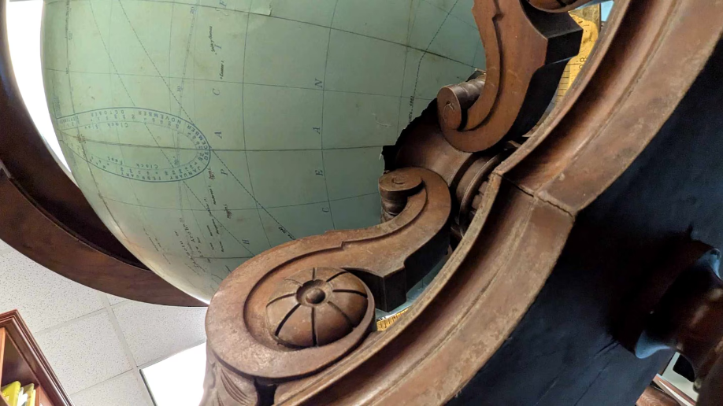
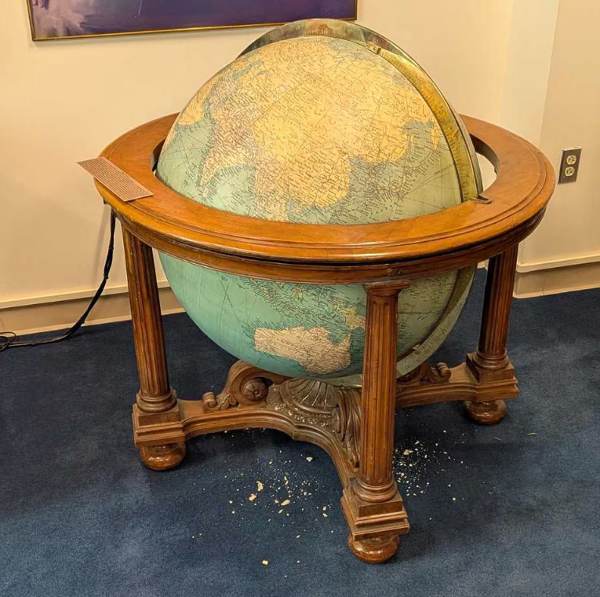

제2차 세계대전 중 드와이트 D. 아이젠하워 장군이 사용한 지구본이 있다
역사적으로 큰 의미가 있는 물건인지라, 이후 미국 육군 측에서
이걸 근현대 유물로 취급하며, 펜타곤에서 보관했다.
그런데 헤그세스 국방부 장관이 자신의 정치적 권위를 높일 속셈이었는지,
지구본을 원래 보관소에서 꺼내 자신의 집무실로 옮기라고 지시했다.
문제는 이게 제작되고 100년 가깝게 된 물건이라 내구도가 좋지 않다는 것.
그래서 미술품 전문가 혹은 최소한 이송 전문가가 담당해야 되는데,
무슨 생각이었는지 헤그세스는 자신의 보좌관들을 보내서 옮기게 했다.
그 결과,


지구본의 소유권을 가진 미국 육군은 이걸 옮길 때 최소한,
육군 군사 역사 센터 전문가들과 협의할 거라 예상했는데
협의는 커녕 관련 문서도 작성된 게 없어
매우 곤혹스러워 하는 중.
이게 올해 초순에 벌어진 일인데, 국방부 내부에서는
워낙 망신스러운 일이라 쉬쉬하고 있었다는 듯.
어디 구루마에 얹어서 옮겼나..